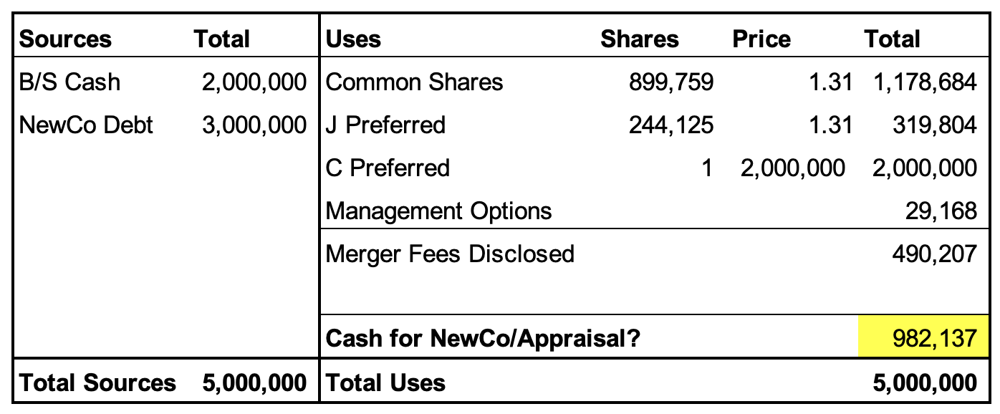
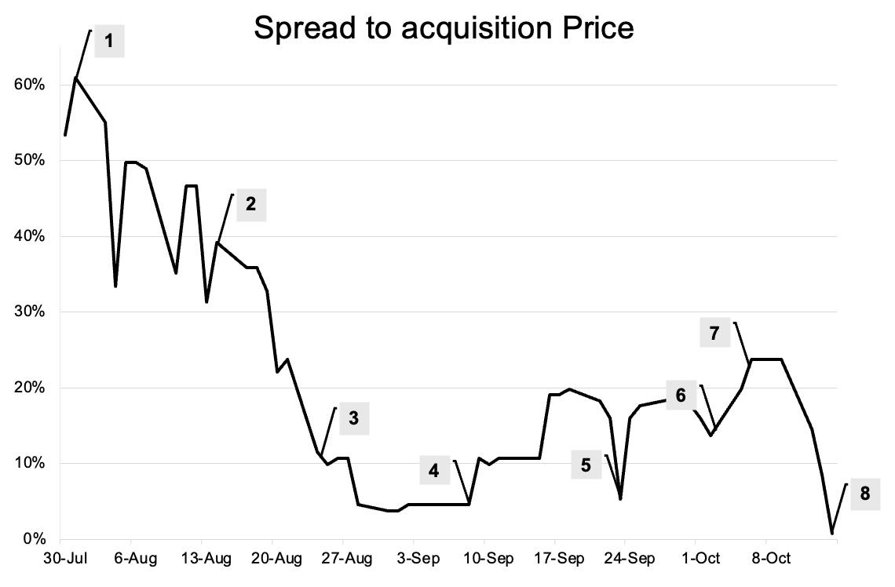
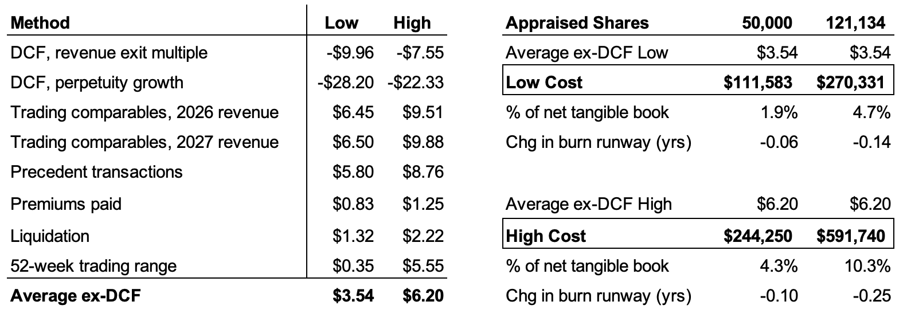

10/18/26 LogicMark (OTC:LGMK)
Last week, a million-dollar company called LogicMark (OTC:LGMK) went private at $1.31 per share. During the deal, the spread narrowed to just 5%, only to widen to 25% after the shareholders voted through the deal. This was 2 weeks before it would ultimately close. Had you purchased the shares at $1, you would have earned a 31% return and an IRR with more than 4 digits!
Here is the analysis I did during the deal, why I decided to pass, and what I learned from the sidelines.
Situation Overview
LogicMark sells medical alert devices to seniors. They look like wearable radios—think Life Alert—“I’ve fallen and I can’t get up!”
The equity had languished for years, ultimately drifting to $0.51, or a market cap of just $500k. However, the company had a tangible book value of over $6 per share, mostly in the form of cash and securities. LogicMark wasn’t a terrible business either. They made around $11.5mn of revenue, mostly contracted through the Veterans Health Administration, which had a 67% gross margin. However, $7.8mn of annual G&A expenses (~$2mn for the CFO/CEO) made it hard to see any value in the equity.
Enter acquirer Positano Partners and Nicholas Kovacevich. According to the proxy, Kovacevich would be doing a levered MBO with the CEO/CFO to be financed by $3mn of new debt and $2mn of cash on the balance sheet. This would be used to buy the common and converted J preferred stock for $1.31/share and a special series C preferred share for $2mn. Coupled with about $500k in estimated fees, that left just under $1mn to recapitalize the business.

Importantly, there was also a clause allowing Kovacevich to terminate the merger if just 1% of shares demanded appraisal, which is a very low bar vs precedent transactions. And if he decided to terminate, LogicMark would pay him $150k!
Timeline of Events
All of this was well and good, and the market reacted accordingly. The spread on the deal eventually tightened to around 5% after the definitive proxy was filed with the SEC. A shareholder meeting was set for 9/25.
On 9/9, the company amended its original proxy to disclose more about how they came to the acquisition price. The spread widened to 20%. Then, the date set for the shareholder meeting came and went with no meeting or news. A week later, a shareholder owning 5.6% of the equity filed a 13D, opposing the deal and demanding appraisal. The spread widened another 5%.
- 7/31/26: Merger agreement signed
- 8/14/26: Preliminary proxy filed with the SEC
- 8/24/26: Definitive proxy and first 13E-3 amendment
- 9/9/26: Revised definitive proxy and second 13E-3 amendment
- 9/25/26: Original date scheduled for the shareholder vote
- 10/2/26: Kirtan Patel filed 5.6% Schedule 13D opposing the deal
- 10/5/26: Shareholder meeting held and merger approved
- 10/13/26: Merger officially closed, with common shareholders entitled to $1.31 per share

My Analysis
I started analyzing the deal around point 6 after the 13D was filed. From my perspective, two factors favored closing: there were no regulatory approvals needed, and the shareholders had already approved it.
However, Kovacevich was a mysterious acquirer whose financing was uncertain, and he also had the right to terminate the deal because more than 1% of the shares had demanded appraisal. The key debate to analyze was whether or not he would exercise these rights because appraisal meaningfully impaired the acquisition.
I knew at least 50k shares demanded appraisal (disclosed in the 13D) and a total of 121k shares rejected the deal. I assumed that all 121k shares demanded appraisal to be more conservative.
It was more difficult to determine a fair appraisal price. I don’t have a great understanding of the factors a judge considers to determine fair value and how that has changed over time.
Instead, I took the average of LogicMark’s financial advisor’s marks and excluded the grossly negative DCFs, which led to a range of $3.54–$6.20. This seemed about right because LogicMark had $6 of tangible book value but was burning ~$4/share a year. Patel, the 13D filer, also bought his shares for $3.51, so the low end of this range would cash him out at par.

Assuming the worst case, a price assigned by the court of $6.20 and 120k shares demanding appraisal, the net value of LogicMark decreases by 591k. I pegged the newCo turning EBITDA positive in 2.5 years, assuming aggressive cost cutting including at least a 50% cut in SG&A.
Even with these aggressive assumptions, their pro forma balance sheet supported only 1.9 years of runway against their 2.5-year transition to profitability. This would not be sustainable, so clearly I was missing something about their inorganic growth or financing plans, which made it hard to handicap whether this 591k haircut was truly meaningful.
Despite the failure of that analysis, it was clear this deal was still a bargain: a dollar worth of bills and securities was being purchased for less than par. I figured Kovacevich knew that and would expect some shareholders to demand appraisal, which led me to believe that the $1mn going to the balance sheet might be arranged to pay for those demands. I would take a 25% spread for that risk!
Ultimately, I got stuck on why Kovacevich would want termination rights if just 1% of shares demanded appraisal. Why not assign some higher figure if this was truly a great bargain? Or was 1% used to maintain flexibility? I couldn’t answer that question, so I decided to pass on the deal.
Conclusion
The deal ended up closing on October 13th for $1.31 per share. 31,411 shares traded after the deal was approved to the time of close, so although you could have only earned peanuts here, I quite like peanuts.
My biggest takeaway is that a low appraisal threshold does not necessarily signal that a deal will not get done. If it is truly a great deal, it will probably remain a great deal, regardless of the 5–10% of shares demanding appraisal! Buyers are rational and expect opposition to bargain purchases. Limiting appraisal exposure may just provide additional flexibility rather than signal that the deal is likely to fail.
Of course, I’ve reached out to the architect of the deal to understand his perspective, but I’ve yet to get a response—I’ll make sure to update this if that ever comes!
On to the next micro-cap merger-arbitrage.
I do not hold a position in the issuer’s securities.
I did not invest in this transaction.